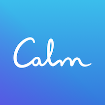

15-Minute Guided Meditation to Reset Your Nervous System
Join me for a 15-minute guided meditation to reset your nervous system through some simple techniques that tone the vagus nerve. You can practice this guided meditation seated or lying down. You'll be placing your hands on different parts of your body and breathing easily. No prior meditation or yoga experience required. Practice anytime you would like to quickly calm or balance your mind and body.
- Caron Baginski
Daily Calm | 10 Minute Mindfulness Meditation | Be Present
Tamara Levitt guides this 10 minute Daily Calm mindfulness meditation to powerfully restore and re-connect with the present.
- Calm | Tamara Levitt
A Place of Stillness 10 Minute Guided Meditation
This 10 minute guided meditation helps you get out of your body and takes you to a place of stillness. There are many benefits of meditation. One of the most popular benefits is that it helps with stress relief. In addition, meditation can also help you focus on your work and clear your mind. Meditation can also reduce anxiety and depression symptoms over time when done regularly.
- Great Meditation
Donations
Please consider providing a donation. It helps keep this site ad-free!
Healing is Possible at Every Moment | Thich Nhat Hanh, 2013.03.10
There is no way to healing, healing is the way. In our daily life we may have small sufferings and as time goes by they may become blocks of suffering in us. We need to recognise this suffering in us. Every breath can bring healing, every step can bring healing. We are able to transform our suffering into peace and joy.
- Thich Nhat Hanh
Looking for More Help?
Buy Our book!
Get Ahead with Calm

Sign up Now!
Guided Mindfulness Meditation - Go Easy on Yourself
This is a new guided mindfulness meditation focused on caring for yourself and showing love for yourself - GO EASY on yourself! I'll bet you are the kind of person who takes on big challenges and puts a lot of pressure on yourself. As the saying goes, we are often our own worst critics. Meditating and being mindful of what pressures cause us stress and anxiety can lead to a healthier mental state..